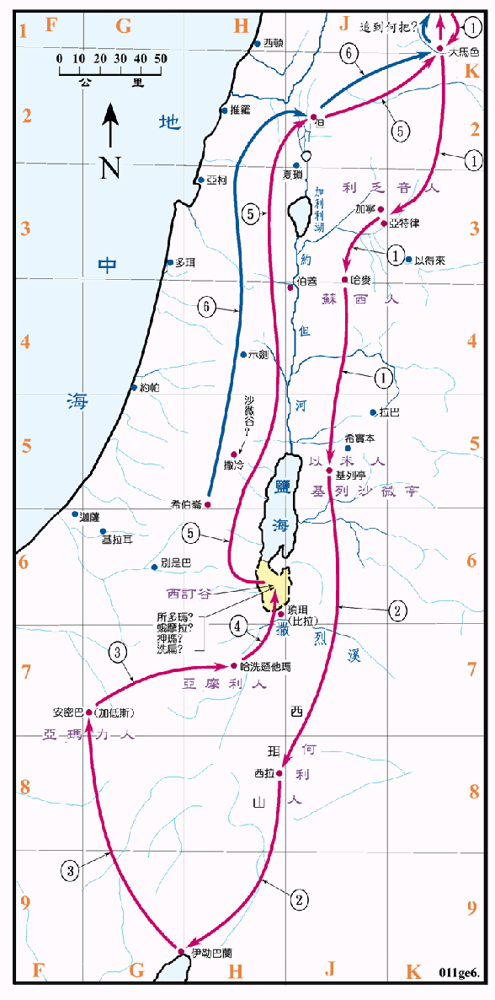

2080BC 前后

行动线说明
| 序号 | 圣经 | 说明 |
|---|---|---|
| 1 | 创14:1-4 | 北方四王攻打南方五王，在南征的途中杀败了利乏音人和苏西人。 |
| 2 | 创14:6 | 杀败了以米人和何利人。 |
| 3 | 创14:7 | 杀败了亚玛力人和亚摩利人。 |
| 4 | 创14:8 | 在西订谷击败南方五王。 |
| 5 | 创14:11-12 | 把五个城中的财物和罗得一家都掳掠了去。 |
| 6 | 创14:13-16 | 亚伯兰追击北方四王，将罗得救回。 |
| 创14:17-24 | 撒冷王麦基洗德为亚伯兰祝福。 |
这一段历史述说明了早在主前两千馀年，两河流域有四个强大的民族结盟，其势力已入侵到达了远在二千馀公里外的阿卡巴湾地区，而且共同控制死海附近的五个富裕的城邦达十二年之久。在其背叛后，又组织了一支联军去远征并在沿途掳掠。这说明了当时国际关系的两种模式，也可看出遥远的两地已有了相当频繁的商业和军事活动，至於这种侵略行动的目的何在，又被压迫者是如何事奉，则未见有说明，推想可能是为了当地所产的食盐和石漆，以及富裕城市中的财物。
亚伯兰领了三百十八人追击北方四王，救回了罗得一家人和财物，足证他是一个非常英勇强壮的人，也可发现他善於经营，其家业之大，需要数百人来管理。以他具有如此优越的条件，仍能在神前谦卑顺服，不以自己为大，不愧是信心之父。